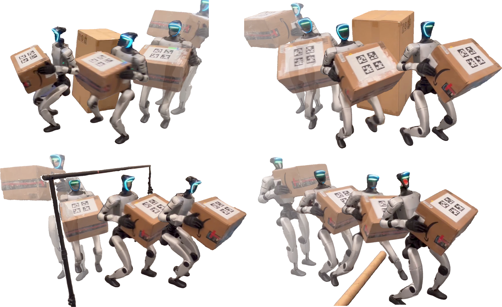
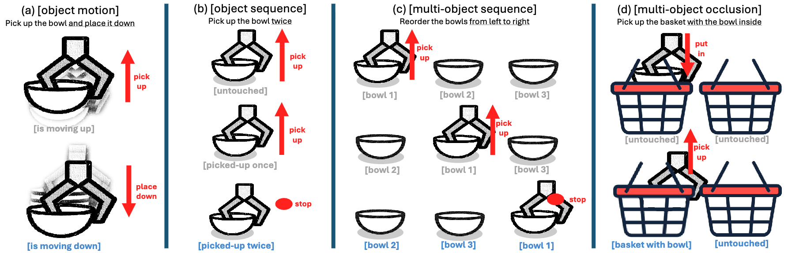
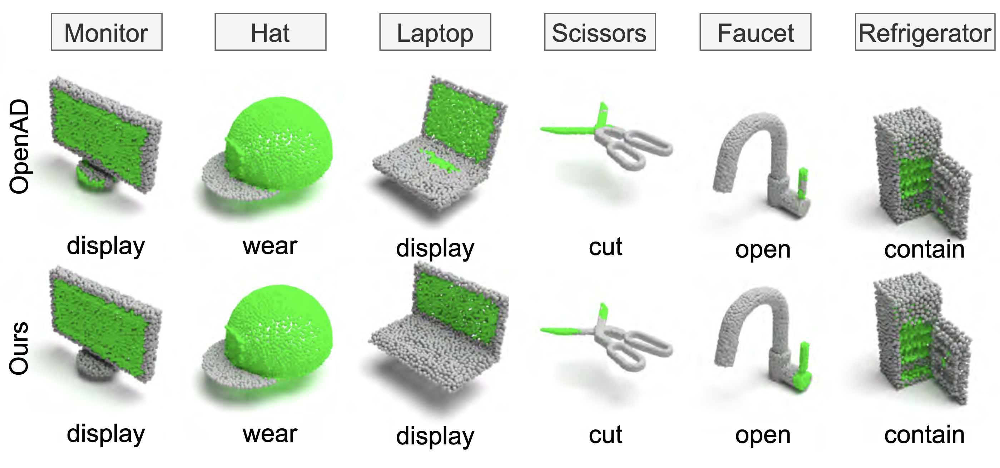
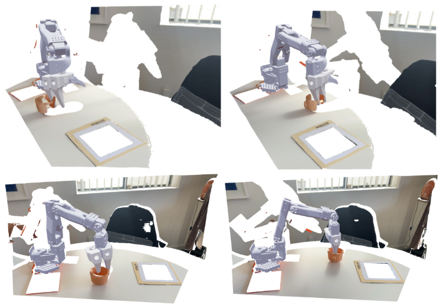
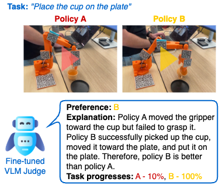

Toan Nguyen
tientoan [at] usc [dot] edu
I am a CS Ph.D. student at the University of Southern California, started in Fall 2025. I am co-advised by Prof. Yue Wang and Prof. Daniel Seita. Prior to joining USC, I was an AI Resident at the FPT AI Center. I graduated from Ho Chi Minh City University of Science.
Nowadays, I'm particularly interested in:
- Humanoid loco-manipulation: Developing whole-body loco-manipulation policies that exploit the humanoid form factor to perform challenging tasks in diverse environments.
- Long-context robot learning: Enabling in-context imitation learning and robots that can reason, track progress, and self-correct in complex and long-horizon tasks.
- Robot Safety: Robots that work safely and reliably alongside humans in unstructured open-world environments.
Feel free to reach out if you'd like to discuss ideas or explore collaboration opportunities!
Publications
* Equal contribution † Equal advising



Other Projects
USC CSCI 699 - Robotic Perception - Fall 2025
Active Perception with VLMs
We developed an active perception system leveraging vision-language models on a Dexmate Vega humanoid.

USC CSCI 699 - Robot Learning - Fall 2025
3D Policy Learning with 3D Foundation Models
We leveraged 3D foundation models to reconstruct rich 3D scene representations for policy learning on an SO-100 robot arm, eliminating the need for expensive depth sensors.

USC CSCI 662 - Advanced Natural Language Processing - Spring 2026
Vision-Language Model as a Judge for Robot Policy A/B Evaluation
We used vision-language models as automated judges to perform pairwise A/B comparisons of robot policy rollouts, offering a scalable alternative to human evaluation.
Professional Services
- Teaching Assistant: USC CSCI 102 - Introduction to Programming Fall 2026
- Conference Reviewer: RSS, ICRA, IROS, ECCV
- Journal Reviewer: RA-L, T-RL
- Organizer: URoS - USC robotics reading group and seminar series